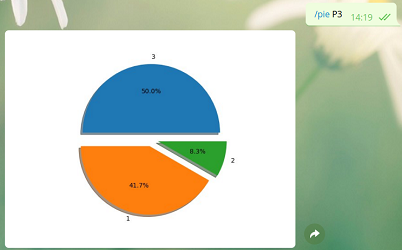

Massive Information Search and Analysis
Under Construction

UNDER CONSTRUCTION
Developed with: Python(ElasticSearch)
Computer Vision
Recognition of football teams

Collaborative project to develop a program which allows to detect of the football team that appears on the image. First step is create a model for each team and then get all fragments of the image to compare theirs color histograms with model.
Developed with: Matlab
Design of Curves and Surfaces

Design of different types of curves and surfaces like Bézier curve and surface, Lagrange interpolation or curve parametrization. Developed in a web application to control different parameters of each curve and surface.
Developed with: Javascript(Three.js, Math.js)
Telegram Bots
Skylines ChatBot

Telegram ChatBot for manupaliting Skylines using a compiler via Telegram and generating graphs and their data. It allows to create buildings and operate between them like intersection, reflection...
Developed with: Python, ANTLR, Telegram API
Quiz ChatBot
Telegram Chatbot that allows the collection of survey data defined by a compiler via Telegram and to consult simple graphs and reports on the data collected.
Developed with: Python, ANTLR, Telegram API
Games
Four in a row

Develop the game of Four in a Row to be able to play against the machine on the Linux interpreter. It is equipped with three different strategies according to the difficulty chosed for the machine.
Developed with: Haskell
Hidato

Collaborative project about create a Java Application to be able to complete an Hidato. Developed with three layer architecture and JUnit tests.
Developed with: Java (JUnit, Java Swing), UML